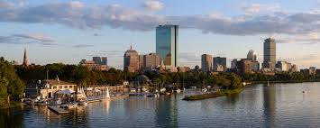

Fakta om Boston
Boston er hovedstad i den amerikanske delstat Massachusetts og den største by i hele New England-området. I 2012 havde byen 636,000 indbyggere. Storboston med forstæder omfatter 4,5 millioner indbyggere. Boston er administrativt centrum i det amerikanske county Suffolk County. Boston bliver ofte omtalt som en universitetsby, eller som Amerikas Athen, fordi der er en stor mængde uddannelsessteder i Boston. Blandt nogle af de største og vigtigste er der Harvard University, Boston University, University of Massachusetts, MIT (Massachusetts Institute of Technology eller på dansk Massachusetts Teknologiske Institut), Northeastern University, Bentley University, Brandeis University, Suffolk University, Harvard Arboretum og Boston College, men der er også andre lidt mere specielle og smallere uddannelser end de store universiteter, fx New England Conservatory som er det ældste selvstændige konservatorium i hele USA og New England School of Law som oprindeligt var den første skole for kvindelige jurastuderende i USA, men som nu dog er til glæde for begge køn, og Emerson College som har specialiseret sig i journalistik, kunst og film. Udover alle universitetsuddannelserne har Boston også USAs ældste offentlige skolesystem, Boston Public Schools, som uddanner cirka 57.000 elever hvert år over 145 skoler.
Tabor Academy er en uafhængig forberedende skole beliggende i Marion, Massachusetts, USA. Tabor er kendt for sine kurser inden for havvidenskab. Tabor placering i Sippican Harbour, Buzzards Bay, har fået det navnet "Skolen ved havet". Wall Street Journal i 2007 rangerede Tabor som en af verdens top 50 skoler til at forberede studerende til at få accept til Amerikas mest eliteuniversiteter. Tabor deltager i Independent School League (ISL) og er medlem af New England Preparatory School Athletic Council og tilbyder en bred vifte af fritidsaktiviteter. Tabor's motto er "All-A-Taut-O", der henviser til den tilstand, hvor et sejlskib er fuldt rigget og alt er på plads. Der henvises til denne sætning i skolens sange og er en hyldest til Tabor's nautiske baggrund. Mottoet på Tabors traditionelle kam er imidlertid "Vincit Semper Veritas", der på latin oversætter til "Truth Always Conquers".
Se jeg kan lave et break